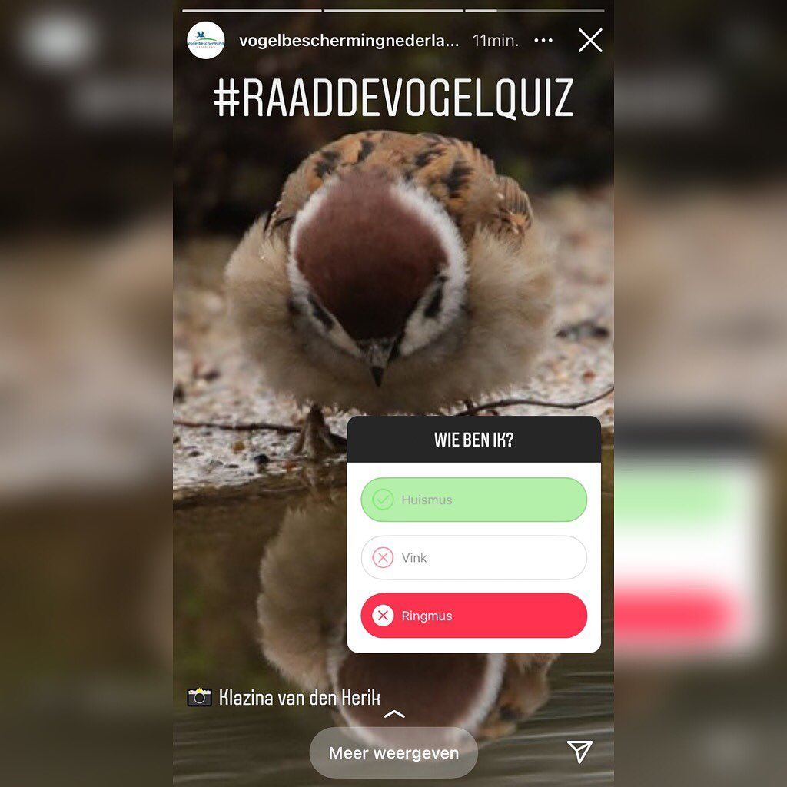

Ringmus, geen huismus
3 november 2021 · Vogelbescherming Nederland
- Op de foto
- Ringmus
- Het ging over
- Huismus

Goeiemorgen namens de @vogelbeschermingnederland ! Het is nog vroeg, vast ook voor deze stagiair 😉

Goeiemorgen namens de @vogelbeschermingnederland ! Het is nog vroeg, vast ook voor deze stagiair 😉